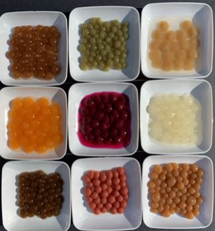
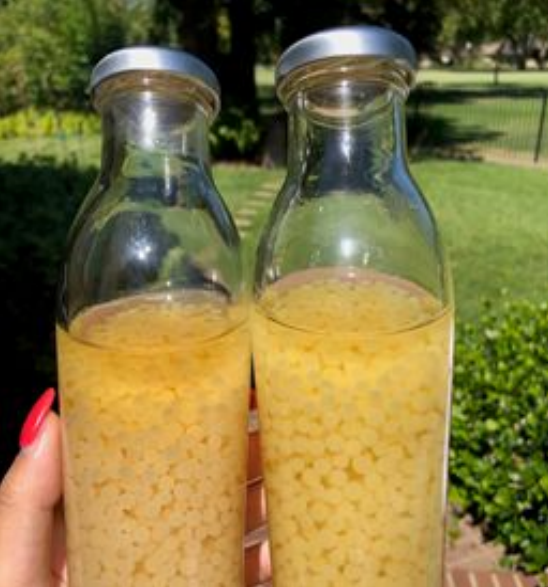
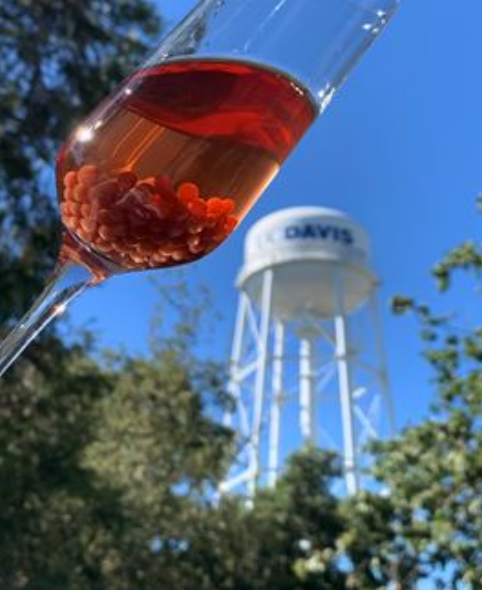
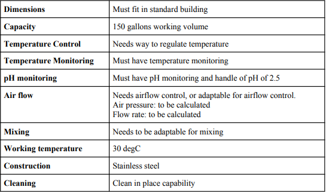
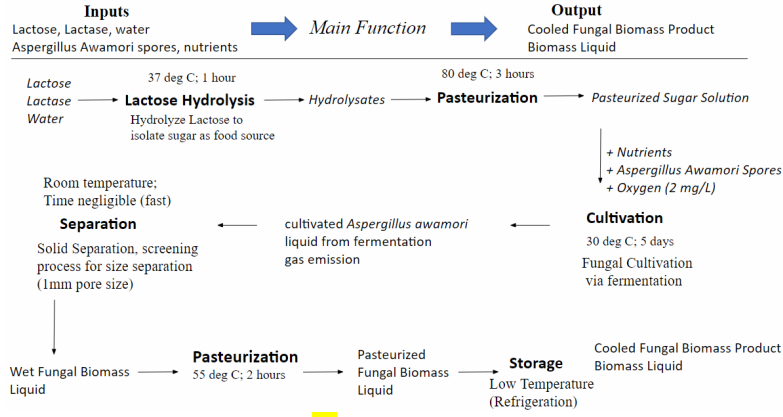
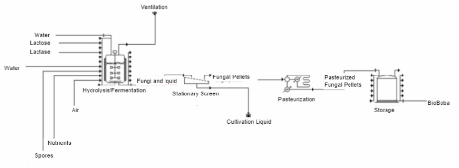
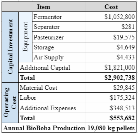

BIOPROCESS ENGINEERING • PROCESS SCALE-UP • SUPERPRO
BioBoba Mycoprotein Production System
Design of a 150-gallon pilot-scale production system for an Aspergillus awamori-based mycoprotein food product, incorporating fermentation, separation, thermal analysis, plant layout, and economic modeling.

01 / OVERVIEW
Scaling a microbial food process from bench scale to pilot production.
BioBoba is a fungal-based mycoprotein food product intended as a protein-rich alternative to conventional food products.
The project focused on scaling the existing bench process into a pilot-scale production system with a 150-gallon cultivation fermenter.

BioBoba mycoprotein product

BioBoba product
02 / PROCESS ARCHITECTURE
From lactose feedstock to finished fungal pellets.
Lactose Hydrolysis
Lactose is broken down into fermentable sugar components for fungal cultivation.
Pasteurization
The sugar solution is heat treated before fungal cultivation.
Fermentation
Aspergillus awamori is cultivated in a 150-gallon fermenter over a five-day batch.
Separation
Fungal pellets are separated from the cultivation liquid without damaging them.
Pellet Pasteurization
The separated fungal pellets are heat treated to improve food safety.
Cold Storage
Finished pellets are stored under refrigerated conditions until use.

Design specifications and requirements for the pilot-scale production system

Functional hierarchy defining the major operations of the BioBoba production system
03 / PROCESS MODELING
SuperPro Designer process simulation.
SuperPro Designer was used to model material flows, unit operations, production throughput, and the economics of the pilot-scale system.
The model helped establish system sizing, equipment requirements, aeration demand, thermal requirements, and overall plant economics.

Pilot-scale BioBoba production process modeled in SuperPro Designer
04 / THERMAL MODELING
Determining whether the fermenter required heating or cooling.
Thermal calculations included heat generated by fungal metabolism, conduction through the stainless-steel vessel, natural convection, and heat removed by aeration.
Early design assumptions expected that cultivation would require heating. The thermal analysis instead showed that the system required active cooling.
This result directly influenced equipment selection for the pilot-scale fermenter.
05 / AERATION
Sizing air supply for fungal cultivation.
Aeration calculations were performed using oxygen requirements from the SuperPro model and estimated oxygen-transfer efficiency of the selected diffuser.
Calculated airflow requirement for the selected aeration configuration.
Working volume of the pilot cultivation fermenter.
Cultivation time per production batch.
06 / SEPARATOR DESIGN
Designing custom equipment when commercial options did not fit.
The separator had to remove fungal pellets from the liquid phase while minimizing breakage, clumping, contamination risk, and cleaning complexity.
Multiple separator concepts were evaluated before selecting a perforated tubular screen design. SolidWorks was used to develop the final separator geometry and associated plant equipment.
07 / PILOT PLANT LAYOUT
Integrating process equipment into a practical facility.
A complete pilot-plant layout was developed around the central fermenter and included equipment storage, product refrigeration, air compression, separator equipment, drains, safety-gear storage, and material access.
The final concept required a room approximately 8 m × 11 m.

Pilot plant facility dimensions and equipment layout all dimensions in meters
08 / KEY RESULTS
A complete pilot-scale production concept.
Estimated annual BioBoba pellet production.
Estimated capital investment for the pilot plant.
Estimated annual operating cost.

Economic analysis of the proposed pilot-scale BioBoba production system
09 / ENGINEERING TOOLS
SuperPro Designer
Process simulation, material balances, throughput modeling, and economic evaluation.
SolidWorks
Separator design, equipment modeling, and pilot-plant layout development.
Excel
Thermal modeling, aeration calculations, equipment comparison, and design analysis.
K-T Decision Analysis
Structured comparison of separator alternatives based on performance and design criteria.
10 / SAFETY & SANITATION
Designing a food process around contamination control.
Safety requirements included sealed equipment, temperature control, fungal-spore containment, clean-in-place capability, and food-safe materials.
Pasteurization steps were incorporated into the process to improve microbial safety of both the cultivation feed and final fungal pellets.
11 / ENGINEERING TAKEAWAY
Process engineering from biology to facility scale.
BioBoba combined bioprocess engineering, equipment design, thermal analysis, process simulation, economics, CAD, and facility planning into a complete pilot-scale manufacturing system.
FULL PROJECT DOCUMENTATION
BioBoba Pilot Production System — Project Poster
View the complete project poster for additional details on process scale-up, system requirements, SuperPro modeling, equipment design, thermal analysis, plant layout, and economic evaluation.
View Full Project Poster ↗12 / TECHNICAL SKILLS